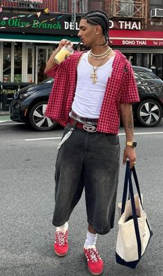
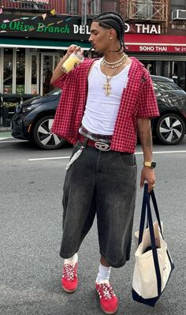

Staring off with Mini Skirts. This is a tiny but yet cute and fashionable style. It's popular among girls and can be very easy to style.
Street Style Inspiration
Here we have street style. Where is mostly influence with baggy jeans and t-shirts, pretty simple right? Just a comfortable easy wear.
WEAR YOUR VIBE, NOT EXPECTATION.

 

Long Skirts/Dresses
These long skirts/Dresses are common everyday earth girl fits. Pear with these net crochet blouse is just the perfect style.
Baddy JEANS AND Crop
I tell you it straight, this might just be one of the most popular trend out there. Can never go wrong with baggy jeans and a crop top, is like the perfect style